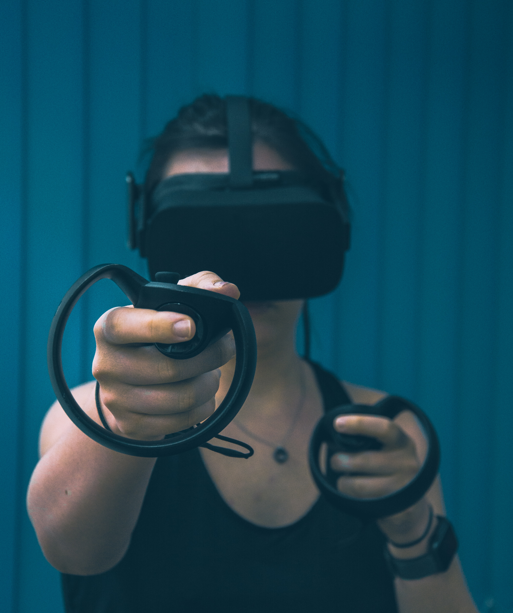
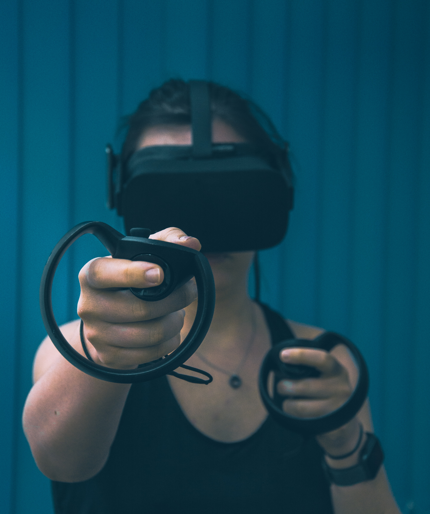

REALIDAD AUMENTADA
1¿Que es la Realidad Aumentada?
La realidad aumentada (RA) es el término que se usa para describir al conjunto de tecnologías que permiten que un usuario visualice parte del mundo real a través de un dispositivo tecnológico con información gráfica añadida por este. El dispositivo, o conjunto de dispositivos, añaden información virtual a la información física ya existente, es decir, una parte virtual aparece en la realidad. De esta manera los elementos físicos tangibles se combinan con elementos virtuales, creando así una realidad aumentada en tiempo real.
2¿Es lo mismo Realidad Aumentada que Realidad Virtual?
La respuesta es no. La Realidad Aumentada puede confundirse con la realidad virtual, pero la diferencia es que esta última se aísla de lo real y es claramente virtual. En cambio, la RA, como se ha dicho previamente, mezcla lo real y lo virtual.
3Características de la Realidad Aumentada.
Permite la combinación del mundo real y el mundo virtual. Gracias a la RA podemos interactuar en el mundo real con elementos del mundo virtual, mezclando así lo mejor de ambos. De esta forma nos permite tener experiencias más completas que no serían posibles sin el uso de la Realidad Aumentada. Es interactiva en tiempo real.
REALIDAD VIRTUAL
4¿Que es la Realidad Virtual?
La Realidad Virtual (RV) es un entorno de escenas y objetos de apariencia real —generado mediante tecnología informática— que crea en el usuario la sensación de estar inmerso en él. Dicho entorno se contempla a través de un dispositivo conocido como gafas o casco de Realidad Virtual. Gracias a la RV podemos sumergirnos en videojuegos como si fuéramos los propios personajes, aprender a operar un corazón o mejorar la calidad de un entrenamiento deportivo para obtener el máximo rendimiento.
5Diferencias con la Realidad Aumentada.
La principal diferencia entre ambas es que la RV construye el mundo en el que nos sumergimos a través de unas gafas específicas. Se trata de un ámbito totalmente inmersivo y todo lo que vemos forma parte de un entorno construido de manera artificial a través de imágenes, sonidos, etc.
6¿Cuáles son los componentes principales de un sistema de realidad virtual?
Audio inmersivo. No solo se necesita lo visual para crear una simulación de este tipo, el audio es igual de imprescindible para asegurar una experiencia total. Conjunto de sensores. Como hemos comentado anteriormente la RV no consiste en una experiencia pasiva; todo lo contrario, se construye a través de la interacción del usuario. Controladores de posición y seguimiento. Estos funcionan como el puente entre el mundo real y el virtual; tus movimientos y acciones quedan registrados y son expresados y preformados en el nuevo espacio simulado. Lentes y pantallas. La manera en que se nos presentan visualmente los entornos con los sistemas de RV es a través de dos imágenes, una específica para cada ojo, de tal manera que crean el efecto estereoscópico dando lugar a la simulación 3D y generando la apariencia de un espacio en el que nos podemos mover.
Galería


 


USOS INNOVADORES DE LA REALIDAD VIRTUAL

Medicina